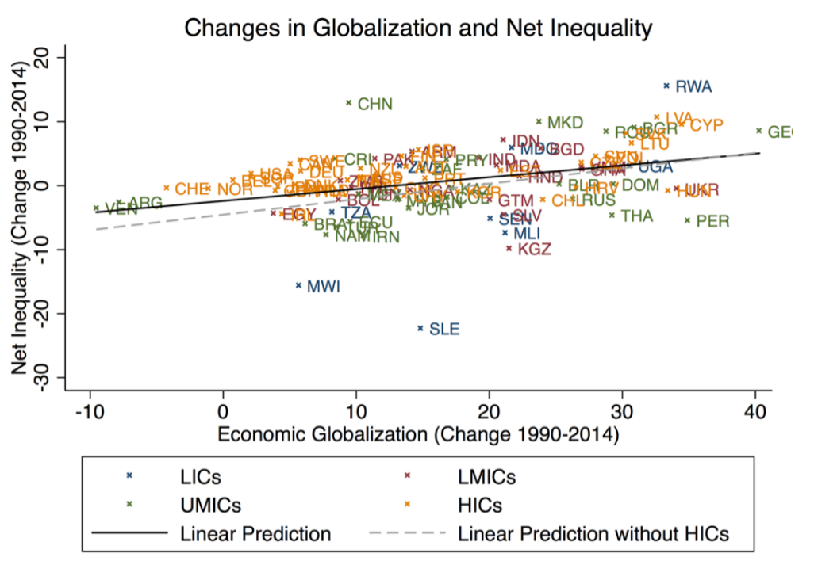

Countries Pulling Appart: Geoeconomic Fragmentation. (TBC)
Topics in Economics, ESCP, 2023-2024
2024-03-11

There is a research agenda here…
January 2023: IMF Staff Discussion Note: Geoeconomic Fragmentation and the Future of Multilateralism
March 2023: Series of blog posts by Aiyar and Alina (1, 2, 3)
May 2023: Conference on Geoeconomic Fragmentation, edited as CEPR ebook
December 2023: Gita Gopinath on Cold War II? Preserving Economic Cooperation Amid Geoeconomic Fragmentation
Which were the more recent geopolitical shocks?


Do they fit the definition of a geo-economic fragmentation shock?

A Closer Look at the Trade Balance
- big increase in financial services before “Global Financial Crisis”
- domino effect of the gfc
- banks have limited they cross-border exposure
- big increase in services, since the 80s
- aka servicification
- common interpretation: goods are now bundled with services
- for services and goods: slow evolution after 2005

Number of Trade Restrictions


What drove the change ?
- protectionnism
- motivated by security issues …
- and the willingness to reoptimize supply chains
- both public and private decisions
Can we measure those gains?

Just a motivational plot:
- Lots of outliers
- What about reverse causality?
- Common result in international trade:
- integration benefits the country producing the good that that is more valued (and more exported)…
- … and export more
Does trade cause inequality?



From The Distribution of Gains from Globalization 2018, by Lang and Tavares.

Losses (in the worst and best cases) are large
- compare to the welfare costs/ gains in the Nordhaus model
A big uncertainty is the calibration of elasticities
Short term / long-term elasticities
2021: can German reduce its dependence on Russian Gas?


Dollar Share in FX Reserves
- The dollar is quickly loosing ground as a reserve currency

Treasury Bond Holdings
- The investor’s base of US treasuries is also shifting
- Reducing the role of US as liquidity provider
- Potentially causing financing isssues to US govt
Who lends to emerging markets?


One last effort üôè

Wooclap: EZATYU